LT

Tetra
Viena privati superprograma jūsų telefonui, planšetei ir kompiuteriui. Laisva programinė įranga, be paskyros, be debesies: jūsų failai ir paštas lieka jūsų įrenginiuose.

Viena privati superprograma jūsų telefonui, planšetei ir kompiuteriui. Laisva programinė įranga, be paskyros, be debesies: jūsų failai ir paštas lieka jūsų įrenginiuose.
Bendrinkite bet ką su Siųsti į kompiuterį telefone arba su Siųsti į telefoną kompiuteryje. Tai eina per jūsų Wi-Fi: be kabelio, be debesies. Jei kompiuteris išjungtas, failas bus išsiųstas, kai jis vėl įsijungs.
Kompiuterio Kontaktuose spustelėkite numerį, ir jūsų telefonas jį surinks. Skambučio burbulas ekrane leidžia atsiliepti, sulaikyti, nutildyti, baigti pokalbį ir perkelti garsą į telefono garsiakalbį.
Kompiuteryje pasirinkite šalį: Tetra sukuria jos žemėlapį, paiešką ir maršrutus iš OpenStreetMap ir siunčia juos į jūsų telefoną ir planšetę. Maršrutai kerta sienas tikrais pasienio punktais, su nurodymais jūsų kalba.
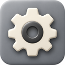
Visos 24 oficialios ES kalbos. Vadovas pirmo paleidimo metu, o bet kada Nustatymuose, parodo, kur bakstelėti ir kodėl, žingsnis po žingsnio.
Pasakykite Tetra savo planą vieną kartą. Ji praneš, kai pasieksite 50 %, 80 % ar 100 %, arba pagal jūsų pasirinktus žingsnius, ir numatys, kaip baigsis mėnuo, dar prieš jam pasibaigiant.
Įmontuoti įgūdžiai leidžia Claude, ChatGPT ar bet kuriam asistentui, galinčiam naudotis jūsų kompiuteriu, importuoti tvarkaraštį, suplanuoti savaitę ar paleisti laikmatį. Jie tiesiog redaguoja kalendoriaus ir laikmačių failus. AI Assist, išjungtas tol, kol jį įjungsite, gali tą patį padaryti programoje Tetra.
Užrašus ir pirkinių sąrašus tvarkykite su žymomis; jie sinchronizuojami tarp telefono ir kompiuterio. Kiekvienas užrašas yra paprastas failas jūsų Tetra aplanke.
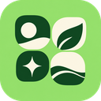
Žymos, gyvos nuotraukos ir Asmenų bei Dokumentų rinkiniai, sudaryti atpažįstant veidus įrenginyje. Ieškokite nuotraukų pagal vietą, o savo Google Photos nuotraukas perkelkite (Takeout importas kompiuteryje).
Filtrai ir automatinis kadravimas suranda puslapį ir jį ištiesina: visi įrankiai, reikalingi tobulai skaitmeninei kopijai, kiek tik puslapių norite.
Užtušuokite PDF failus ir nuotraukas, kad paslėpta dalis būtų pašalinta iš paties failo, o ne tik uždengta. Tetra nuotraukoje randa akis ir jas uždengia juodomis juostomis ar žvaigždutėmis bei suranda tekstą, kurį reikia paslėpti.
Word, Excel ir PowerPoint atsidaro ir įrašomi patys, pakankamai suderinami kasdieniam darbui. PDF failai redaguojami taip, kaip redaguoja Dokumentai, o dokumentuose esantys filmai ir garsai veikia. Telefono išdėstymas, kuriuo iš tikrųjų galima naudotis.
Prijunkite išorinį diską prie Tetra, ir ji automatiškai padarys visų duomenų atsarginę kopiją arba perkels senesnes nuotraukas į jį, kad paties kompiuterio diskas liktų kuo laisvesnis.
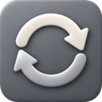
Tetra parodo, kiek vietų laiko kiekvieną failą: telefoną, planšetę, kompiuterį ar USB diską, ir kas dar yra tik vienoje vietoje. Jūsų pačių atsarginės kopijos, be debesies plano, kurį reikėtų mokėti.
Kiekvienas el. laiškas ir priedas išsaugomas kaip įprastas failas: žalia, kai išsaugotas čia, oranžinė, kai yra tik serveryje. Saugykla suranda net iš serverio ištrintus laiškus. Veikia Gmail, mokyklų ir Microsoft paskyros. Telefone vienu metu rodomas vienas langas; plati planšetė rodo aplankus, sąrašą ir laiškus greta.
Klauskite apie savo paštą, kalendorių, laikmačius, užrašus, failus, kontaktus, žemėlapius ar internetą, įklijavę savo Mistral raktą. Vienu jungikliu išjungiamas visas DI, ir tada niekas niekur nesiunčiama. Kiekvienos programos jungiklis nusprendžia, ką ji gali matyti.
Kiekviena telefono, planšetės ir disko kortelė pasako, ką ji daro, po vieną sakinį kiekvienai programai. Redaguoti atveria vadovą: kuri programa, Išjungta, Veidrodis ar Perkelti, kiek lieka įrenginyje, judančių dalykų žemėlapis, tada Patvirtinti. Telefone ar planšetėje nuotraukos pagal numatytuosius nustatymus perkeliamos, o likusi dalis nukopijuojama. Kai užimta 90 %, Tetra pasiūlo, ką perkelti, ir nieko nekelia be klausimo.
Viena pradžia, vienas aplankas, tos pačios programėlės Android ir Linux sistemose. Taip pat viduje: Paštas, AI Assist, Skeneris, Kodai ir Teksto redaktorius.
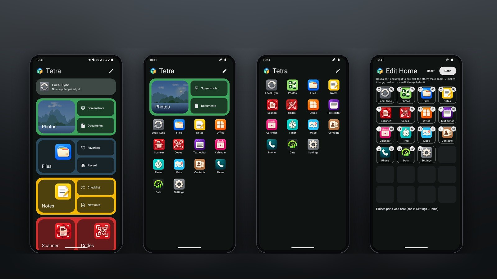
GrupėsMišinys Tik piktogramosRedagavimo režimasGrupės, mišinys ar tik piktogramos. Vilkite dalį į bet kurią langelį, padarykite ją didelę, vidutinę ar mažą, arba paslėpkite.
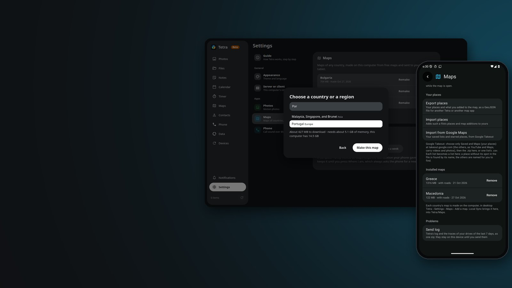
Pasirinkite šalį ar regioną Nustatymai › Žemėlapiai. Jūsų kompiuteris sukuria jos žemėlapį, paiešką ir maršrutus iš OpenStreetMap, o sinchronizacija juos perkelia į telefoną ir planšetę. Kai žemėlapis yra trijų mėnesių senumo, Tetra siūlo jį sukurti iš naujo.
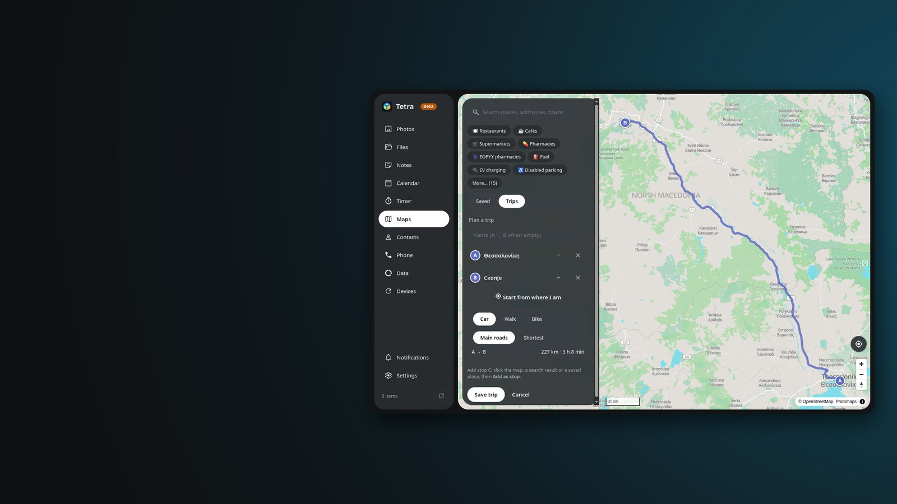
Su gretimos šalies žemėlapiu maršrutas kerta sieną tikrais pasienio punktais, pagrindiniu keliu. Nurodymai jūsų kalba, kilometrais arba mylėmis.
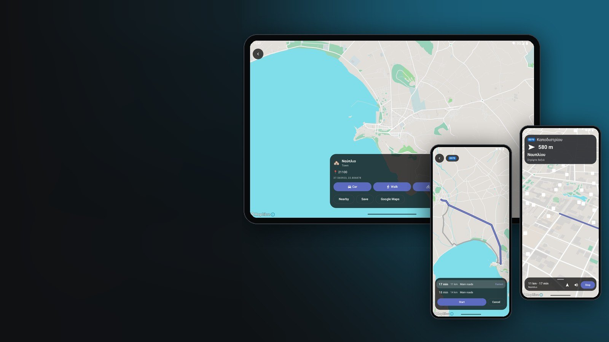
Paieška ir vietos, maršrutai automobiliu, pėsčiomis ar dviračiu ir balsinis navigavimas posūkis po posūkio, viskas įrenginyje. Be paskyros, be sekimo.
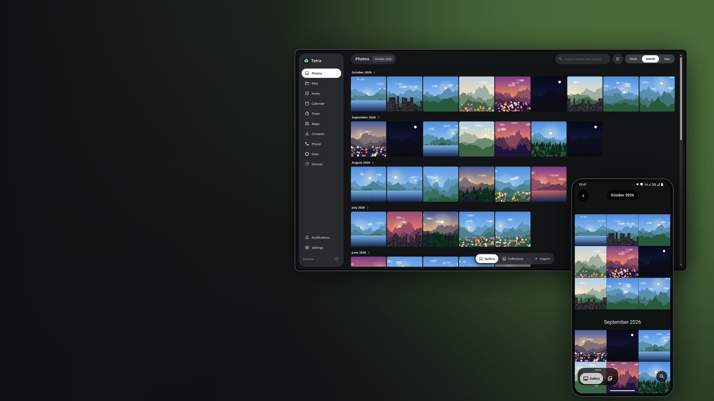
Laiko juosta, rinkiniai, asmenys, jums surasti dokumentai, žemėlapis ir redaktorius. Veidus ir žymas nustato pats įrenginys.
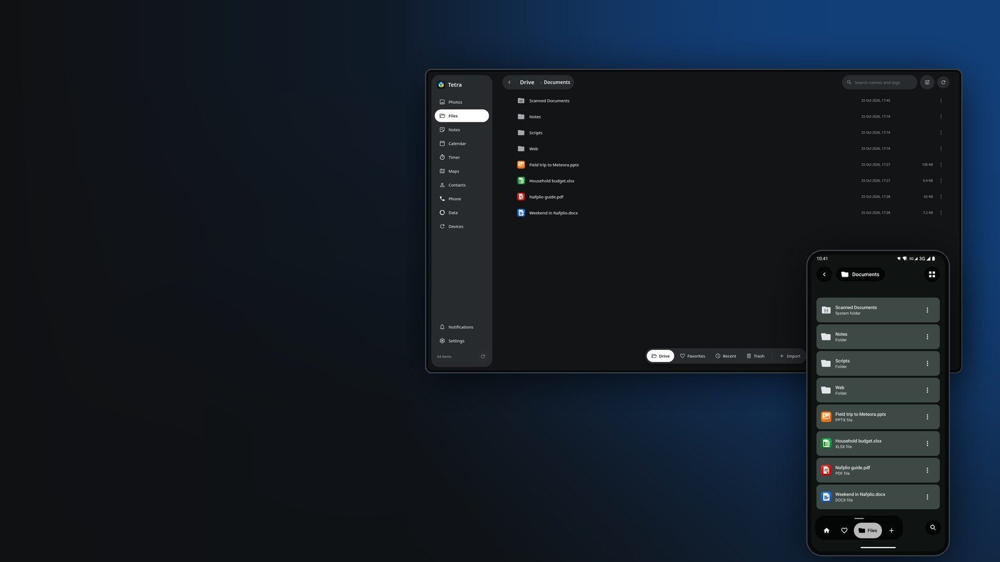
Failų tvarkyklė jūsų Tetra aplankui: žymos, mėgstamiausi, aplankų spalvos, Šiukšlinė, miniatiūros ir sistemos aplankai.
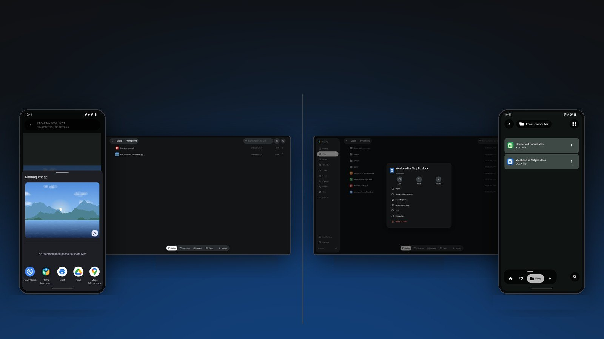
Iš telefono į kompiuterį Iš kompiuterio į telefoną 1. Bendrinti › Siųsti į kompiuterį2. Kompiuteryje: Failai › From phone 1. Kompiuteryje: Siųsti į telefoną2. Failai › From computerPer jūsų Wi-Fi: be kabelio, be debesies, be paskyros. Jei kita pusė išjungta, failas laukia ir bus išsiųstas, kai ji vėl įsijungs.
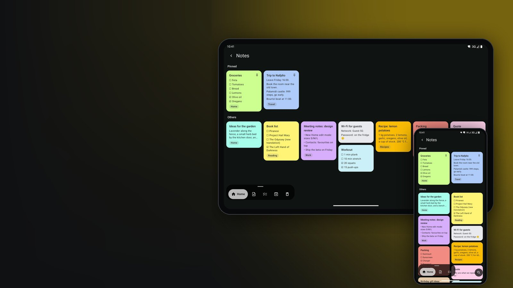
Spalvos, žymos, prisegimai ir kiekvieno užrašo istorija. Klaviatūros spartieji klavišai planšetėje. Sinchronizuojasi su kompiuteriu.
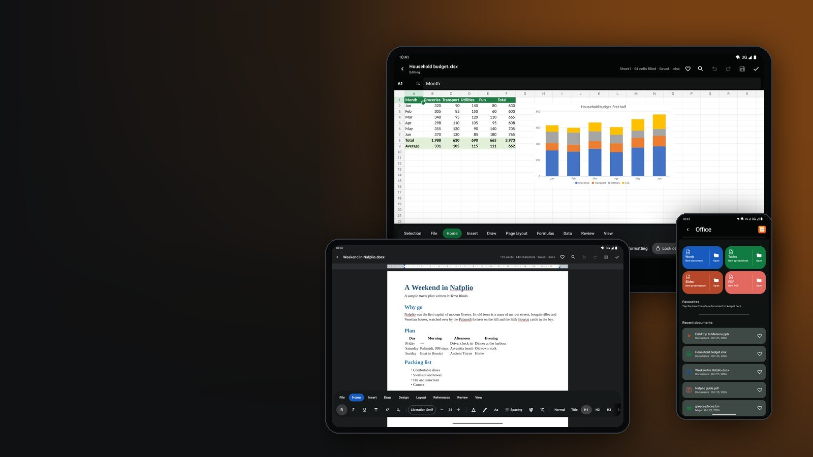
Tikri puslapiai su liniuotėmis, Juostelė, diagramos ir temos. Failai atsidaro ir įrašomi patys. PDF redaguojami taip, kaip redaguoja Dokumentai, su pastabomis, parašais, formomis ir užtušavimu; dokumentuose esantys filmai ir garsai veikia.
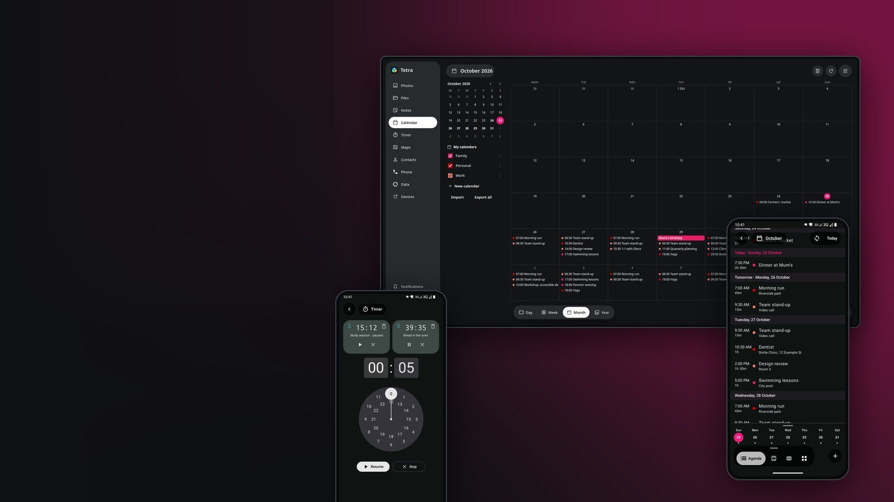
Paprasti iCalendar failai: diena, savaitė, mėnuo ir darbotvarkė, priminimai, gimtadieniai iš Kontaktų. Laikmačiai skamba visuose įrenginiuose.
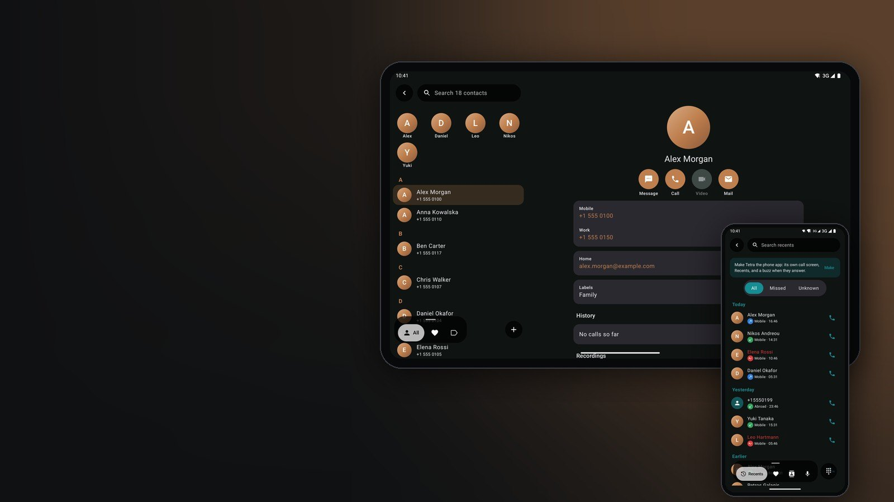
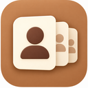
Kontaktai · TelefonasJūsų kontaktai kaip vCard failai, su veidais iš Nuotraukų. Numerių rinkiklis su Naujausi ir šlamšto patikrinimu; skambinkite iš kompiuterio per telefoną.
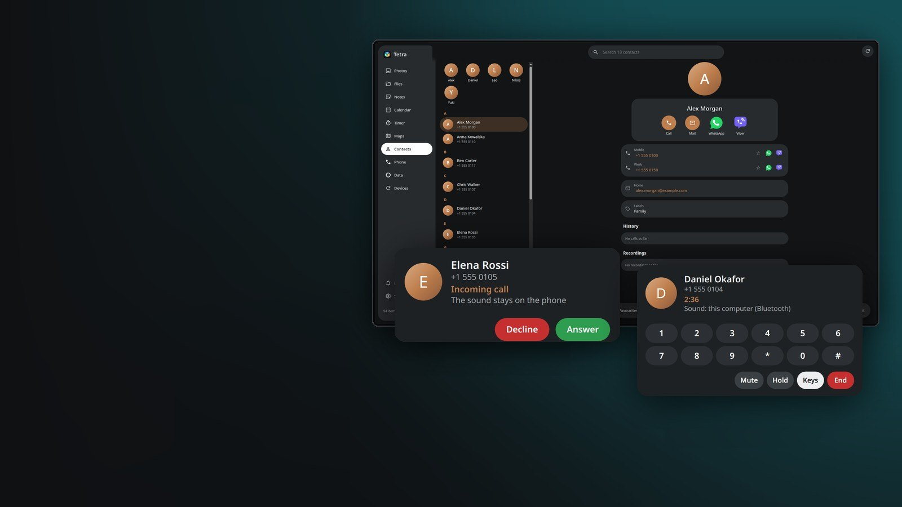
Kas nors skambinaPokalbio metu, klaviatūra atidarytaSpustelėkite numerį Kontaktuose, ir telefonas jį surinks. Kai kas nors skambina, burbulas ekrane leidžia atsiliepti, sulaikyti, nutildyti, įvesti skaitmenis, perkelti garsą į telefono garsiakalbį ar baigti pokalbį, o telefonas lieka kišenėje.
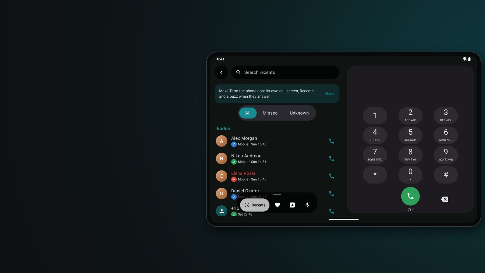
Naujausi kairėje, klaviatūra visada atidaryta dešinėje. Numeriai atpažįstami pagal jūsų šalies kodą, stacionarūs telefonai pavadinami vietovės pavadinimu iš jūsų žemėlapių, o Skambučių blokavimas laiko savo sąrašą.
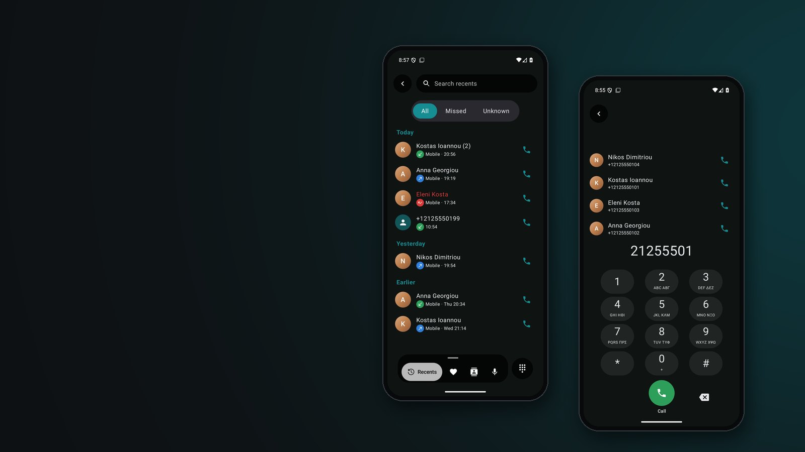
Skambučiai pagal dienas su vardais iš jūsų kontaktų, filtrai Praleisti ir Nežinomi bei klaviatūra, kuri randa kontaktą, kol renkate numerį.
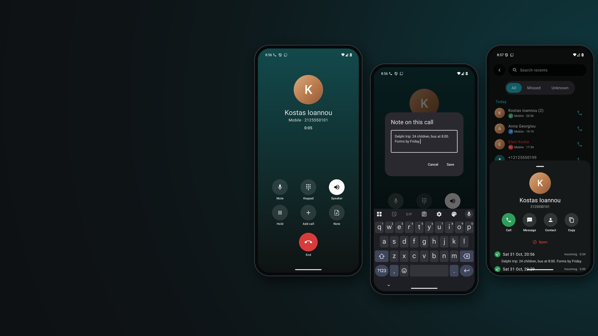
Paverskite Tetra telefono programa ir skambučiai gauna savą ekraną: nutildyti, klaviatūra, garsiakalbis, sulaikyti ir pridėti skambutį. Pastaba užrašo, kas pasakyta skambučio metu; ji lieka prie skambučio Naujausiuose ir patenka į Pastabas, su žmogaus vardu.
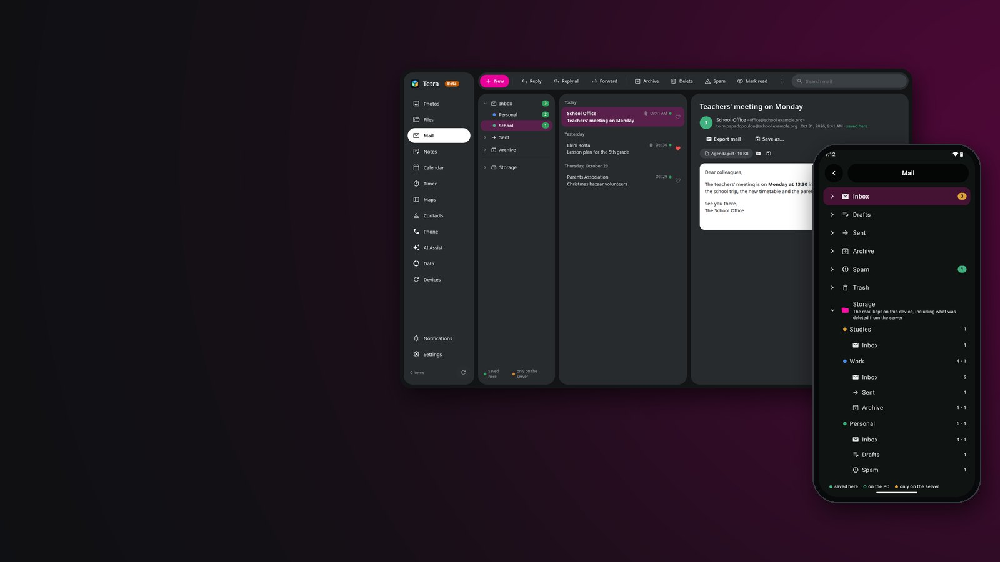
Kiekvienas el. laiškas ir priedas yra įprastas failas: žalia, kai išsaugotas čia, oranžinė, kai yra tik serveryje. Saugykla naršo kiekvieną saugomą laišką, net ištrintą, pažymėtą magenta spalva. Visą laišką arba priedą eksportuokite į Dokumentus. Paskyra, kurios telefonas pats negali atsisiųsti, rodoma per šį kompiuterį, pažymėta ⇄.
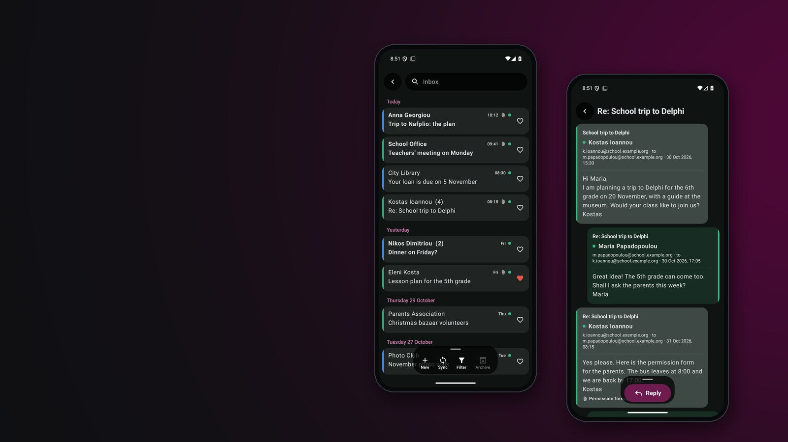
Telefone ir planšetėje įjunkite Pokalbius skiltyje Nustatymai › Paštas ir laiškas su atsakymais yra viena eilutė, su jų skaičiumi. Atidarykite ją ir laiškai išsidėsto vienas po kito, jūsų – dešinėje, apačioje – Atsakyti.
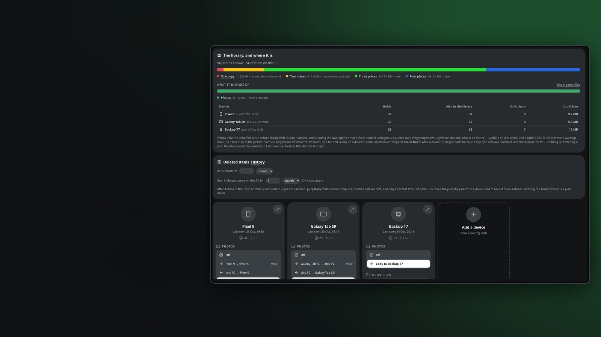
Tetra parodo, kiek vietų laiko kiekvieną nuotrauką ir kuri nuotrauka yra tik vienoje vietoje. Prijunkite USB diską automatinėms atsarginėms kopijoms arba perkelkite senas nuotraukas į jį, kad kompiuterio SSD liktų laisvas.
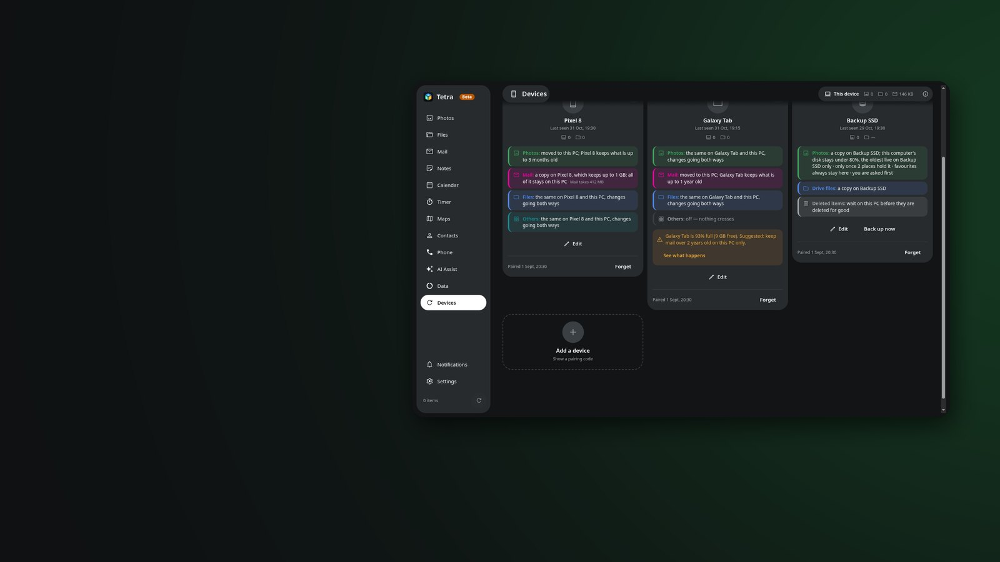
Redaguoti atveria vadovą: kuri programa, Išjungta, Veidrodis ar Perkelti, kiek lieka įrenginyje (automatiškai, metus, mėnesį), judančių dalykų žemėlapis, tada Patvirtinti. Iki jūsų patvirtinimo niekas nekeičiama.
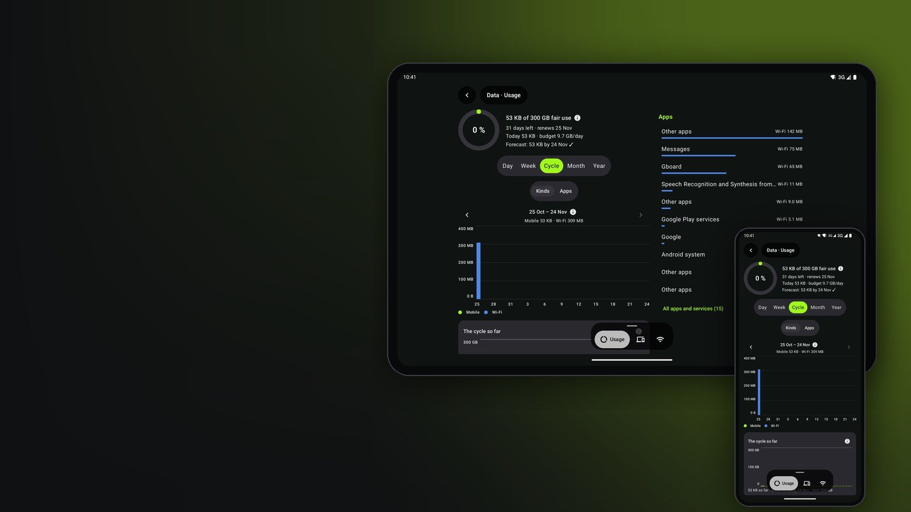
Kiek kiekviena programėlė sunaudoja mobiliojo ryšio ir Wi-Fi duomenų, įspėjimai apie planą prieš jam pasibaigiant, ir telefono, planšetės bei kompiuterio duomenys kartu.
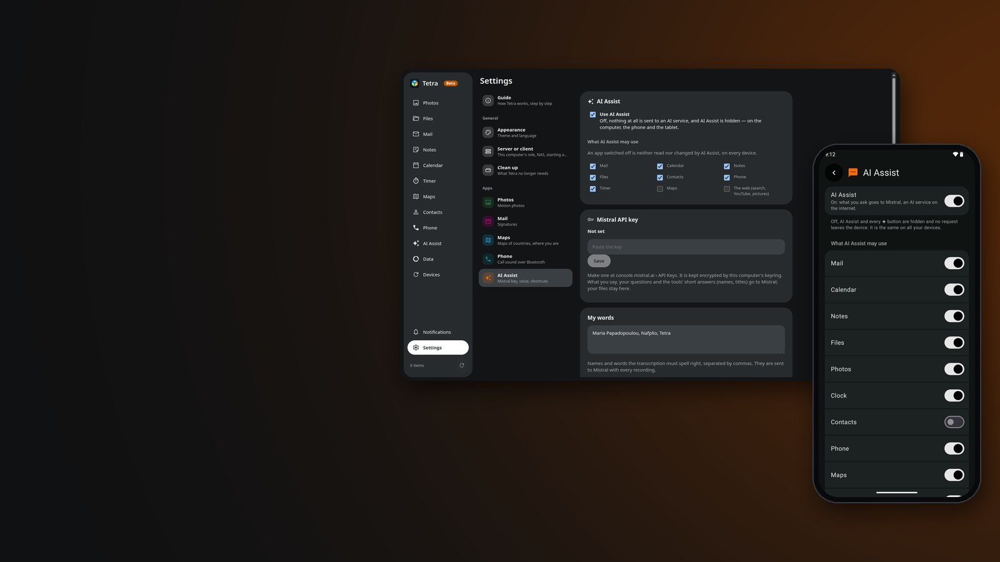
Naudoja Mistral su jūsų įklijuotu raktu; Mistral yra vienintelė DI paslauga, su kuria ji bendrauja. Vienu jungikliu išjungiamas visas DI, o išjungus niekas niekur nesiunčiama. Kiekviena programa taip pat turi savo jungiklį: išjungtos programos asistentas nei skaito, nei keičia.
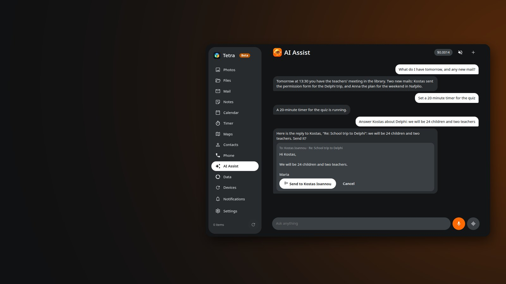
Parašykite arba pasakykite, ko reikia: rytojaus planai, naujas paštas, laikmatis kontroliniam, atsakymas kolegai. Ieško kalendoriuje, pašte, pastabose, failuose, kontaktuose, žemėlapiuose ar internete, o laiškas išsiunčiamas tik paspaudus Siųsti.
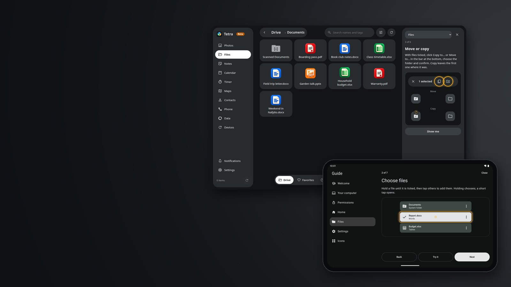
Pirmo paleidimo metu ir Nustatymai › Vadovas: kur bakstelėti ir kodėl, žingsnis po žingsnio. Paveikslėliai juda, parodydami, kas vyksta, o Išbandyti rodo žingsnį ekrane, kol jį tikrai atliekate.
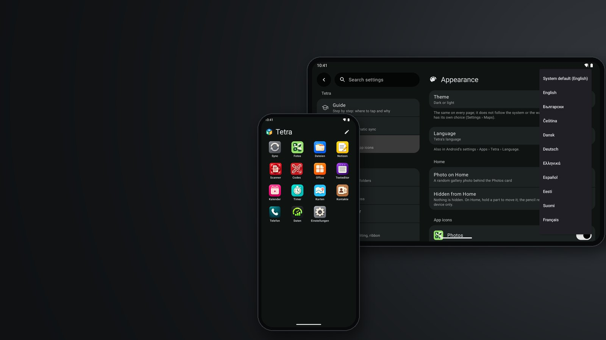
Visos 24 oficialios ES kalbos telefone ir kompiuteryje. Tetra seka jūsų sistemos kalbą, nebent Nustatymai › Išvaizda pasirinksite kitą.
Ekrano nuotraukose naudojami išgalvoti pavyzdiniai duomenys.
Kiekviena programėlė buvo išmatuota telefone ir patobulinta, kad atsidarytų per mirksnį. Laikas, kol ekranas parodo savo turinį, prieš ir dabar:
Pilka: prieš · spalva: dabar. Kompiuteryje Nuotraukos vėl atsidaro per 71 ms vietoj 741 ms.
Įdiekite jį telefone ir kompiuteryje, kartą susiekite juos QR kodu, ir jie sinchronizuosis per jūsų Wi-Fi.
Telefonams ir planšetėms su Android 11 ar naujesne versija.
Šaltinis ir daugiau informacijos GitHubLinux: AppImage daugumai platinimų arba .deb Debian, Ubuntu ir Mint. Ji laukia sistemos dėkle, kol prisijungs jūsų telefonas.
Šaltinis ir daugiau informacijos GitHubKiekvienas telefono gamintojas šiuos žingsnius pavadina šiek tiek kitaip, bet žingsniai tie patys. Naujinimai įdiegiami tuo pačiu būdu, virš senos versijos, ir viskas išlieka.
Atsisiųskite Tetra tik iš šio puslapio arba iš jos GitHub leidimų. Kiekvienas leidimas pasirašytas tuo pačiu raktu, ir Android įdiegia naujinį tik tada, jei jame yra šis parašas. Pirminis kodas viešas, kad jį gali perskaityti bet kas.
Atsisiųskite jį, dešiniuoju pelės mygtuku spustelėkite jį › Ypatybės › Leidimai › Leisti vykdyti failą kaip programą (arba paleiskite chmod +x Tetra-*.AppImage), tada du kartus spustelėkite jį. Debian, Ubuntu ir Mint .deb atsidaro jūsų programinės įrangos diegimo programoje arba įdiegiamas su sudo apt install ./local-drive-desktop_*_amd64.deb.
Ne. Tetra veikia vienas telefone ar planšetėje, įskaitant paštą: telefonas pats atsisiunčia jūsų paskyras. Su darbalaukio programa jūsų failai sinchronizuojami per jūsų Wi-Fi, kompiuteris sudaro bet kurios šalies žemėlapius ir saugo visą jūsų pašto kopiją.
Ne. Tetra yra laisva programinė įranga (GPL 3.0): be paskyros, be reklamų, be sekimo. Jūsų failai lieka jūsų įrenginiuose. Paštas keliauja tik tarp jūsų įrenginių ir jūsų pašto teikėjo, o AI Assist bendrauja su Mistral tik tada, jei jį įjungiate ir ko nors paklausiate.
Viename aplanke: Tetra telefono saugykloje ir ~/Tetra kompiuteryje. Tai įprasti failai: nuotraukos, dokumentai, užrašai, kalendoriai (.ics), kontaktai (.vcf) ir laiškai (.eml, aplanke .System/Mail), kuriuos gali atidaryti ir kitos programos.
Gmail su programos slaptažodžiu: Google vietoj įprasto slaptažodžio prašo jo, o Tetra parodo, kur jį susikurti. Mokyklų paskyros, pavyzdžiui sch.gr, su jų slaptažodžiu. Hotmail, Outlook ir Microsoft 365 prisijungia per Microsoft, bet kiekvienai iš jų pirmiausia reikia vienkartinės programos registracijos Microsoft, kuri nemokama: ją atliekate vieną kartą ir į Nustatymai › Paštas įvedate jos programos (kliento) ID. Universitetui gali prireikti, kad programą pirmiausia patvirtintų jo IT skyrius. Žingsniai aprašyti faile MAIL_PLAN.md Tetra-mobile saugykloje. Paskyra, kurios telefonas pats negali atsisiųsti, rodoma per šį kompiuterį, pažymėta ⇄.
Tik tai, ko paprašote, ir tik po patikros. Kiekviena paskyra prasideda archyvo patikra, kurioje rodoma, kas būtų archyvuota, ištrinta serveryje ir ištrinta čia, su kiekiais. Niekas nevalomas, kol nepaspausite Vykdyti; po to valymas vykdomas kartą per parą. Serveris praranda tik tą paštą, kuris jau išsaugotas šiame kompiuteryje.
Taip. Nustatymai › Paštas skiltyje Numatytoji el. pašto programėlė padaro Tetra programą, kuri atidaro el. pašto nuorodas (mailto:), todėl tinklalapio nuoroda pradeda naują laišką Tetra programoje. Telefonai gali padaryti tą patį.
Naujai įdiegus DI išjungtas: AI Assist paslėptas ir niekas nesiunčiama jokiai DI paslaugai. Norėdami jį naudoti, įjunkite jį skiltyje Nustatymai › AI Assist ir įklijuokite savo Mistral raktą, sukurtą console.mistral.ai. Tai, ką sakote ir klausiate, bei trumpi įrankių atsakymai keliauja į Mistral; jūsų failai lieka čia. Kiekvienos programos jungiklis nusprendžia, ką ji gali skaityti: paštą, kalendorių, užrašus, failus, kontaktus, telefoną, laikmačius, žemėlapius ir internetą. Kai jungiklis išjungtas, nesiunčiama visiškai nieko.